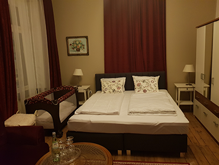
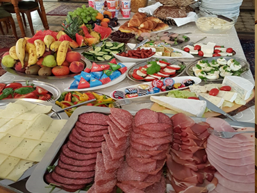
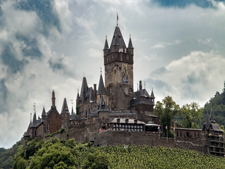

Unsere Zimmer
Alle unsere 8 Zimmer bzw. Appartements sind hell und freundlich gestaltet, befinden sich in ruhiger Lage mit angenehmen Ausblick. Sie müssen auf keinerlei modernen Komfort verzichten. Die Einheiten verfügen über ein Bad bzw. Dusche/WC, TV und WLAN gehören ebenfalls zur Ausstattung.
Frühstück
Genießen Sie nach Lust und Laune in gemütlichem Ambiente, mit stilvollen Möbeln und eleganter Atmosphäre Ihr Frühstück. Unser Hotel bietet Ihnen ein große Auswahl vpon Zutaten damit sie Ihren Hunger gestillt bekommen. Dazu servieren wir hervorragende Weine von heimischen Winzern und aus aller Welt.